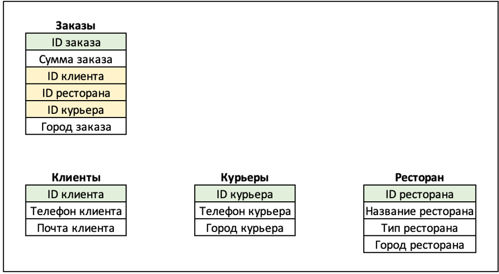

Что такое база данных?
База данных — это упорядоченный набор структурированной информации или данных, которые обычно хранятся в электронном виде в компьютерной системе. База данных обычно управляется системой управления базами данных (СУБД). Данные вместе с СУБД, а также приложения, которые с ними связаны, называются системой баз данных, или, для краткости, просто базой данных.
Типы баз данных
Существует несколько типов баз данных. Выделим некоторые из них:
- Реляционные базы данных
- Key-value базы данных
- Документно-ориентированные базы данных
- Графовые базы данных
- Колоночные базы данных
Реляционные базы данных
Реляционная база данных – это набор данных с предопределенными связями между ними. Эти данные организованны в виде набора таблиц, состоящих из столбцов и строк. В таблицах хранится информация об объектах, представленных в базе данных.
В каждом столбце таблицы хранится определенный тип данных, в каждой ячейке – значение атрибута. Каждая строка таблицы представляет собой набор связанных значений, относящихся к одному объекту или сущности.
Каждая строка в таблице может быть помечена уникальным идентификатором, называемым первичным ключом, а строки из нескольких таблиц могут быть связаны с помощью внешних ключей. К этим данным можно получить доступ многими способами, и при этом реорганизовывать таблицы БД не требуется.
Примеры реляционных СУБД
Самые популярные примеры РСУБД: MySQL, Oracle DB, PostgreSQL, Microsoft SQL Server. Они имеют определенные преимущества и недостатки. Стоимость, масштабируемость, функции, простота использования и поддержка — все это важные факторы при выборе лучшей СУБД для ваших задач. Вы можете выбрать СУБД, которая наиболее соответствует вашим потребностям. Например, для обучения можно использовать MySQL.
Язык запросов SQL
Для взаимодействия с реляционными базами данных чаще всего используется SQL . Это специальный язык программирования, на котором пишутся запросы к реляционной базе. SQL-запросами можно создавать и удалять таблицы в реляционной базе, изменять данные в существующих таблицах и доставать из таблиц необходимую информацию.
Реляционные базы данных удобно использовать в аналитике, так как информация в них структурирована и распределена по смыслу, что, конечно, мечта любого аналитика. Однако, аналитики часто пишут сложные и не очень эффективные SQL-запросы, потому важно придумывать способы ускорения обработки запросов к реляционной базе.
SQL – стандартный язык для всех реляционных баз данных, но сам по себе этот факт не делает его реляционным. Как это ни печально, SQL слишком часто отходит от принципов реляционной теории.
К. Дейт "SQL и реляционная теория"
Начало работы с SQL
Синтаксис операторов SQL является очень простым. Чтобы работать с ними, хватит базовых познаний в Еxcel и начального уровня английского языка. Ведь в основном операторам SQL задаются очень простые команды:
- SELECT — выбор данных.
- FROM — источник информации, откуда брать данные.
- JOIN — добавление таблиц.
- WHERE — при каком условии.
- GROUP BY — сформируй группу данных по заданному признаку.
- ORDER BY — сортировка данных по нужному признаку.
- LIMIT —количество результатов.
- ; — конец предложения
Все системы, работающие с SQL операторами, имеют подобную структуру. Они включают в себя базу данных в виде таблицы, из которой пользователь черпает информацию, возможность отправки запросов и получения результата.
Примеры построения основных SQL запросов:
- SELECT : SELECT * FROM имя таблицы;
- UPDATE : UPDATE `имя таблицы` SET name='Ivan' WHERE id=1
- INSERT : INSERT INTO имя таблицы (id, name, surname) VALUES(2, 'IVAN', NULL);
- DELETE : DELETE FROM `имя таблицы` WHERE id = 1;
Требования ACID
Реляционные базы данных, в отличие от нереляционных, соответствуют ACID — это требования к транзакционным системам. Соответствие им гарантирует сохранность данных и предсказуемость работы базы данных:
-
- Атомарность
- условие, при котором либо транзакция успешно выполняется целиком, либо, если какая-либо из ее частей не выполняется, вся транзакция отменяется.
-
- Единообразие
- условие, при котором данные, записываемые в базу данных в рамках транзакции, должны соответствовать всем правилам и ограничениям, включая ограничения целостности, каскады и триггеры.
-
- Изолированность
- условие, гаратирующее, что во избежание путаницы транзакция не повлияет на другие элементы до окончательного сохранения изменений.
-
- Неизменность
- обеспечивает неизменность данных после сохранения изменений в результате транзакции.